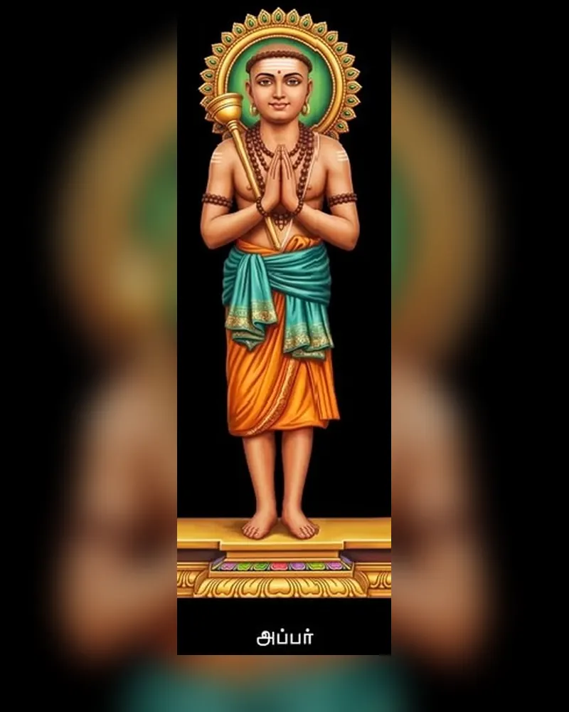
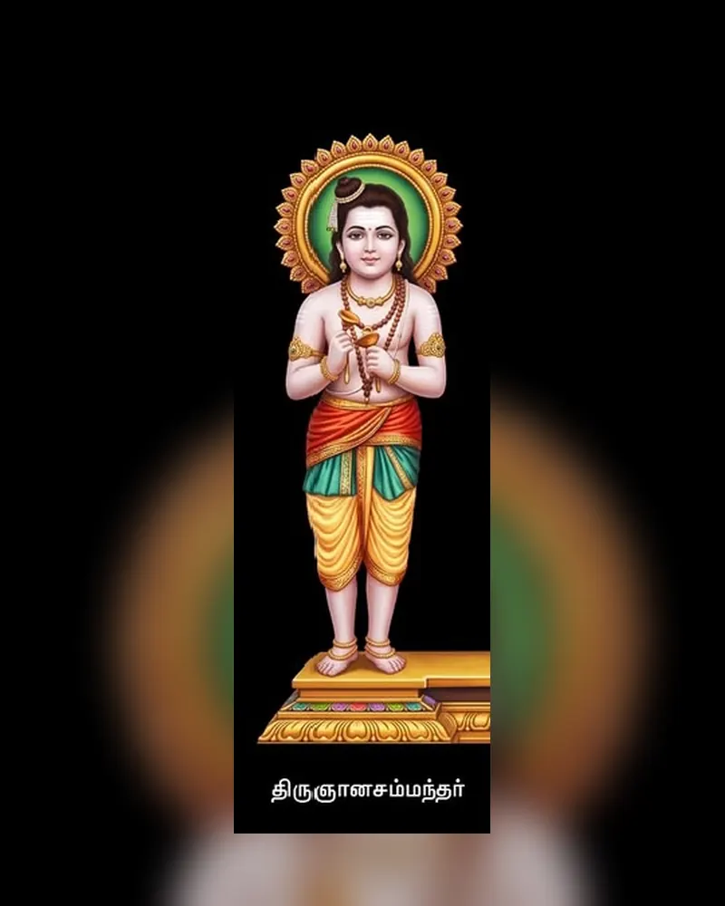
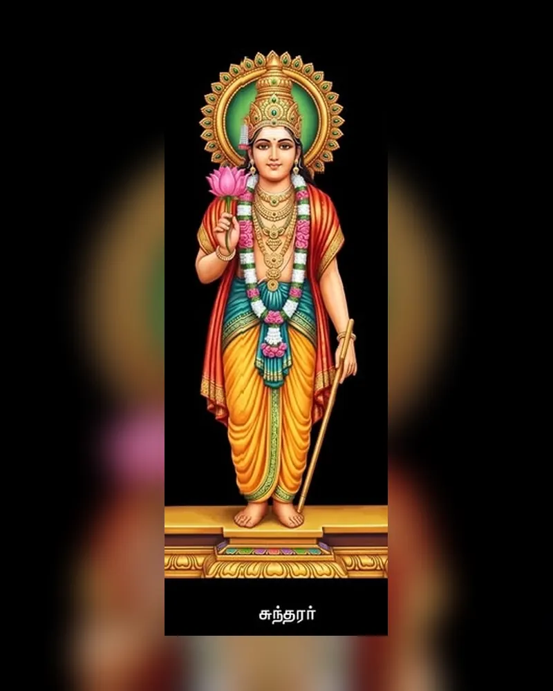
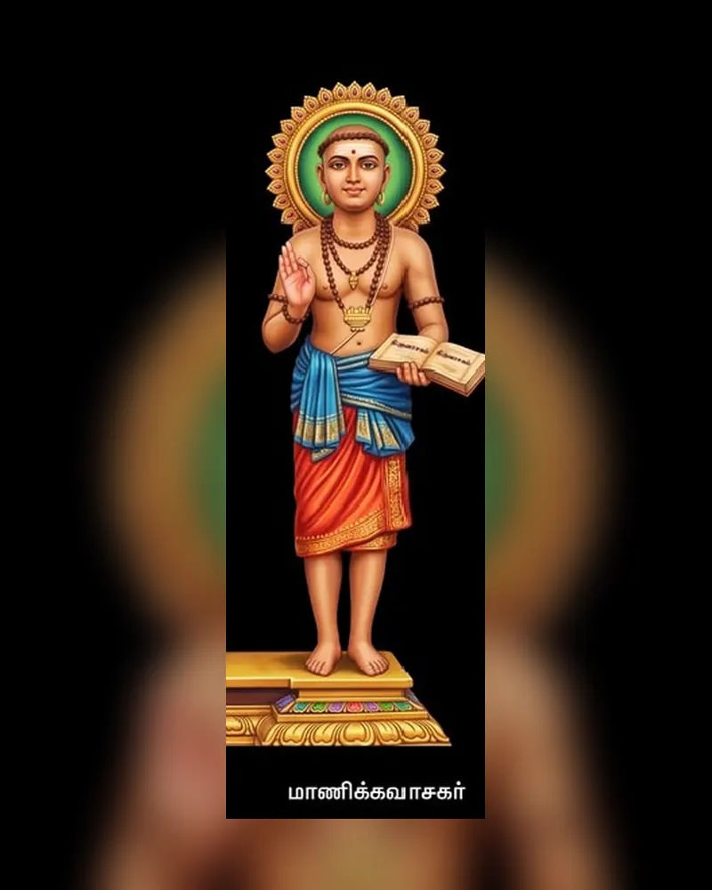

Thirunavukkarasar (Appar) — “King of Speech” • Uzhavara-padai

Brief Bio
Born: Thiruvamur, Tamil Nadu
Era: 7th Century CE
Birth name: Marulneekiyar
In Thiruvamur, the child Marulneekiyar grew in the shade of his elder sister Thilagavathiyar’s unwavering Siva-bhakti. Orphaned early, his heart still searched. Drawn by the austere promise of Jain dharma, he left home for Thiruppatirippuliyur, became Dharmasena, and rose to head the monastery — yet a searing soolai (stomach fire) no Jain rite could quench burned within.
Hearing his sister’s tearful Namachivaya at Thiruvathigai, he returned, holy ash upon his brow. As she smeared thiruneeru and he sang ‘Kootrayina Varu’, the agony melted — grace healing body and soul together. Enraged Jains swayed King Mahendravarman I to trials: a lime kiln cooled to a lotus pool, poison turned to nectar, a sea-stone floated on the chant of the Five Letters. Each wonder opened the Pallava’s heart, and the kingdom turned toward Siva.
Thereafter his life became thondu. Hoe in hand, he swept weeds and thorns from temple courts — Uzhavarapadai, the humblest worship — walking barefoot to 125 shrines, voice pouring 3,056 Thandagams of Tirumurai 4–6. ‘Adiyarkku adiyen — servant of servants,’ he sang, teaching that eloquence bows lowest. With child-saint Sambandar he journeyed as a father and son in faith, until at Thirupugalur his breath dissolved into Siva’s feet — the King of Speech finally silent in bliss.
Key Events
- Conversion back to Saivism through his sister Thilagavathiyar’s prayers.
- Surviving trials ordered by Pallava King Mahendravarman I — lime kiln, poison, tied to a stone in the sea at Kadalil Kal.
- Converting Mahendravarman I from Jainism to Saivism.
- Lifelong service cleaning temple premises with the hand-hoe.
- Pilgrimage on foot to countless Shiva temples.
Literary Works
Thousands of hymns marked by humility and service.
- Tevaram: Volumes 4, 5 and 6 of the 12 Tirumurai.
- Famous: Masil Veenaiyum, Kootrayina Varu Vilakkagileer.
- Style: Thandakam meter — long, flowing devotion.
- Count: ~3,066 padigams in tradition.
Temples & Listen
Key temples — tap name for video tour:
Thirugnana Sambandar — Child Saint • Jnana-pal

Brief Bio
Born: Sirkazhi, Tamil Nadu
Era: 7th Century
Lifespan: 16 years
In lotus-ponded Sirkazhi, where twelve sacred names cling to one town, Sivapada Hridayar’s prayers flowered as Aludaya Pillai — ruby lips, eyes like new moon. At three, left upon the tank bund while his father bathed at Thoniappar’s shrine, the child cried ‘Amma! Appa!’ And the Mother and Father of the universe came — Uma with a golden bowl of Gnana-paal, Siva watching upon Nandi. She wiped his tears and fed him wisdom itself.
Milk still glistening, he pointed skyward and sang ‘Thodudaya Seviyan’ — Vedas blooming on a toddler’s tongue. At Thirukkolakka, Siva feared his bud-soft palms would bruise, and placed golden thalam etched with the Five Letters into them. Pearl palanquin, parasol, cymbals followed, Yazhpanar’s yazh answering his voice across 220 shrines — ash to Pumpavai’s girl, breath to the dead merchant’s son, healing to the hunch-backed Pandya at Madurai where his hymn won fire-ordeal and water-ordeal against the Jains.
Even Appar bent and called him ‘father’, such was his purity. Yet he remained a child — anklets ringing, wonder brimming. At sixteen, garlanded for marriage at Achalpuram, he sang ‘Kallur Perumanam’ and a soft Jyoti opened in the sanctum. ‘Come,’ he whispered, and bride, kin, guests stepped into light and dissolved into Siva. Sixteen years, sixteen thousand honeyed verses — proof that love, not age, is the measure of bhakti.
Key Events
- First hymn at 3 — Thodudaiya Seviyan.
- Pearl palanquin & cymbals at Thirukkolakka.
- Madurai debate — defeated Jains, fire/water ordeal.
- Cured Pandya king’s fever with Appar.
- Merged with flame at Thirumayilai at 16.
Literary Works
- Tevaram: Vols 1–3 — ~383 padigams.
- Famous: Thodudaiya Seviyan, Mandiramavathu Neeru.
- Style: Musical, luminous, pann-isaival foundation.
Temples & Listen
Key temples — tap for video:
Sundarar (Sundaramurthy) — “Thambiran Thozhan” — Friend of Shiva

Brief Bio
Born: Tirunavalur
Era: Late 8th c.
To Sadaiyanar and Isaignaniyar — both to become Nayanmars — was born in Tirunavalur a Kailasa dweller, Alala Sundaran, sent to earth for a tender fault. Named Nambi Aruran, loved into luxury by his foster-father, chieftain Narasinga Munaiyar, his heart still knew only one master. On his wedding morn, garlands waiting, an old Brahmin burst into the mandapa waving a palm-leaf — ‘This boy is my slave, bound by his grandfather’s deed.’
The court upheld the claim. The old man led the boy to Thiruvennainallur’s sanctum and vanished, then shone upon Nandi as Siva Himself: ‘I claimed you because you are Mine.’ Half in protest, half in love, Sundarar burst forth ‘Pitha Piraisudi’ — his first quarrel with his Friend. So began sakhyam: teasing, demanding, sulking like a lover. He loved Paravai at Thiruvarur, then Sangili at Thiruvotriyur, and Siva — Thambiran Thozhan — became his messenger, begging pardon, fetching gold from heaven, filling famine granaries, enduring even the saint’s sharp words as Vanthondan, the wilful one.
Yet every demand was for others, every sulk a song for the world. From him flowed Thiruthondathogai — the first garland of the 63 saints — and 1,026 honeyed verses of Tirumurai 7, where household love and god-love mingle. At Thiruvanchikulam, mist rising from the fields, Siva sent a white elephant; friend-king Cheraman galloped alongside, his horse winged by the Five Letters. Together they rose — body and breath — into Kailasa, friendship that even death could not untie.
Key Events
- Wedding stopped at Thiruvannur — slave-deed.
- First hymn Pitha Piraisudi under protest.
- Friendship with Cheraman Perumal.
- Shiva as messenger to Paravai; gold miracles.
- Ascended on white elephant to Kailasa.
Literary Works
- Tevaram: Vol 7 — 1,026 verses.
- Famous: Pitha Piraisudi, Ponnum Meippomum.
- Tiruthondathogai: Catalogue of 63 Nayanmars.
Temples & Listen
Key temples — tap for video:
Manickavasagar — “Gem-worded” • Tiruvasagam

Brief Bio
Born: Thiruvathavur
Era: 9th c.
Role: Minister to Pandya king
In Thiruvathavur near Madurai, the boy Vadavurar mastered Tamil and Sanskrit so sweetly that King Arimarthana pressed the royal seal into his palm and named him Thennavan Brahmarayan. Silk never clung to him; his eyes were already on Nataraja’s anklets at Chidambaram. Sent to the Chola shore with a treasury of gold to buy war-horses, his caravan turned instead toward a hum that pulled his reins — the chant of ‘Hara Hara’ drifting from a kuruntha grove at Thiruperunturai.
There beneath the tree sat a Guru of light, disciples around Him — Siva Himself waiting for His minister. Vadavurar’s sceptre fell, tears flooded, and the king’s gold poured not for horses but for a shrine with no form: Avudaiyarkoil, where the sanctum holds no linga, only an empty pedestal — God beyond all shape. An angry king demanded horses; Siva sent jackals turned steeds that at midnight howled back to jackals. Vaigai swelled. An old lady, Vandhi, could not raise her share of the bund, and Siva came as a coolie for a bowl of cooked rice — then dozed instead of digging. The king’s cane fell upon Him, and every back in the kingdom stung; the flood himself subsided at that touch.
Broken and blissful, the minister wandered, singing. At Thiruvannamalai he woke his Lord with Palliezhuchi, in Margazhi maidens sang Thiruvempavai, and at Chidambaram he poured 656 verses of Tiruvasagam — Sivapuranam first, where ‘Namachivaya vazhga’ still trembles the air each dawn. G.U. Pope, weeping as he translated, likened him to Paul and Francis, calling the hymn unsurpassed. At last, singing Achcho Padigam before the dancing Lord, Manikkavasagar — he whose words are rubies — dissolved into light.
Key Events
- Met Shiva as Brahmin guru — instant conversion.
- Jackals→horses, Vaigai floods, Shiva as coolie.
- Composed Thiruvempavai, Thiruppalliezhuchi.
- Enshrined Tiruvasagam beside Vedas at Chidambaram.
Literary Works
- Tiruvasagam: 51 sections, 656 verses — Tirumurai 8.
- Tirukkovaiyar: 400 mystical love poems.
- Famous: Thiruvempavai, Sivapuranam.
Temples & Listen
Key temples — tap for video:
Remedies — Which Padigam for Which Need
Nalam Tharum Pathigam — Thirumurai as Marundhu (medicine). Tap a problem to open text & audio.
⚠️ For faith, cultural and educational information only — not medical, legal or astrological advice. Recitation is a devotional practice; consult professionals for health/legal matters.
🩺 Health — உடல் நலம்
- Stomach pain / incurable stomach ills: Kootraayina Vaaru by Appar (4.001) — Cure for stomach/intestinal disorders Read Text YouTube
- Bone fracture / bone disease / paralysis: Tunivalar Thingal by Sambandar (3.072) — Bone strength, fracture healing, polio/paralysis Read Text YouTube
- Heat diseases / fever: Maasil Veenaiyum by Appar (4.004) — Heat-related ailments Read Text YouTube
- Poison, snake / scorpion bite, allergy: Onru Kolaam by Appar (4.018) — Antidote, allergy relief Read Text YouTube
- Back pain / hunchback / spine: Vazhga Anthananar by Sambandar (3.054) — Back pain, hunchback cure (Koon) Read Text YouTube
- Eye disorders — left eye: Aalam Thaan Uganthu by Sundarar (7.061) — Left eye ailments Read Text YouTube
- Eye disorders — right eye: Meelaa Adimai by Sundarar (7.095) — Right eye ailments Read Text YouTube
- Diabetes / blood pressure / addiction / unknown illness: Thunivalar Thingal (Sirkazhi) by Sambandar (1.044) — Systemic ills, de-addiction Read Text YouTube
- Fever, throat, blackmagic / evil eye: Avvinai by Sambandar (1.116) — Tiruneelakanta — poison, fever, suram, seivinai Read Text YouTube
- Stuttering / speech: Thiruvasagam 8.112 by Manickavasagar (8.112) — Speech fluency (thikkuvai) Read Text YouTube
- Fear of death / poison / wild beasts: Kandukollariyaanai / Sunnaven by Appar (4.002) — Fearlessness, poison protection Read Text YouTube
- General wellness: Mandiramavathu Neeru by Sambandar (2.066) — Tiruneeru — overall health Read Text YouTube
🪐 Planets & Dosha — கோள்கள்
- Navagraha dosha — all 9 planets: Kolaru Pathigam by Sambandar (2.085) — Turns evil to good, shields from planetary afflictions Read Text YouTube
- Saturn (Sani) affliction: Bogamaartha by Sambandar (—) — Offset Sani dosha Read Text YouTube
💰 Wealth & Livelihood — பொருளாதாரம்
- Economic prosperity / poverty: Idarinum Thalarinum by Sambandar (1. —) — Wealth, removal of poverty Read Text YouTube
- Daily food / sustenance: Annam Paalikkum by Appar (—) — Never lack food Read Text YouTube
💍 Marriage — திருமணம்
- Success in marriage / alliance: Sadayaai by Sambandar (—) — Marriage fixed, obstacles removed Read Text YouTube
- Auspicious weddings / anniversaries: Mannil Nalla Vannam by Sambandar (—) — To be sung at weddings Read Text YouTube
👶 Child & Family — குழந்தை
- Blessing of progeny: Kankaatunudalaanum by Sambandar (—) — Child boon Read Text YouTube
- Safe delivery / childbirth: Nanrudaiyaanai / Mattuvaar Kuzhalaal by Sambandar / Appar (—) — Ease during delivery Read Text YouTube
⚖️ Legal & Fear — வழக்கு / அச்சம்
- Success in lawsuits: Vaasi Teerave / Maraiyudayaai by Sambandar (—) — Victory in litigation Read Text YouTube
- Imprisonment / bondage: Maasil Veenaiyum / Maasu Il Veenaiyum by Appar (5.090) — Release from jail/fetters Read Text YouTube
- Fear of death: Kandukollariyaanai by Appar (—) — Freedom from fear of death Read Text YouTube
🧘 Mind & Confidence — ஆளுமை
- Self-confidence / daily worship: Sottrunai Vediyan / Vetraagi by Appar (—) — Confidence, everyday prayer Read Text YouTube
- Education / knowledge: Thiruthondathogai-linked / Kalvi by Sambandar (—) — Focus in studies (Sivaya Kalvi category) Read Text YouTube
🕉️ Spiritual — ஆன்மீகம்
- Daily spiritual uplift: Sivapuranam (Namachivaya Vazhga) by Manickavasagar (8.001) — Heart-melting, liberation — recited daily Read Text YouTube
- General well-being (Thiruppugazh): Thiruppugazh various by Arunagirinathar (Thiruppugazh 1027/243) — Holistic wellness (Sivaya adds Thiruppugazh) Read Text YouTube